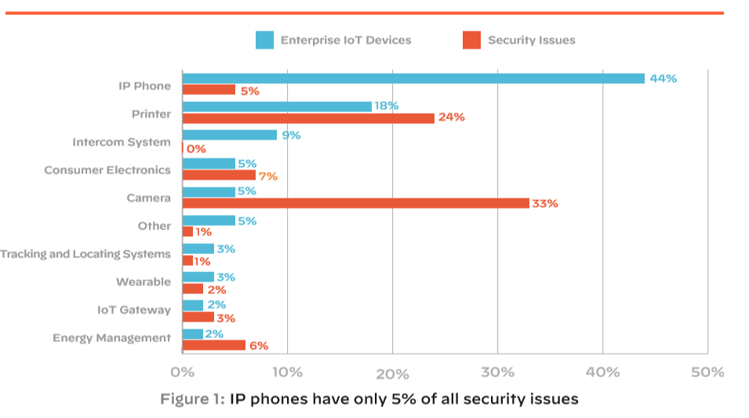
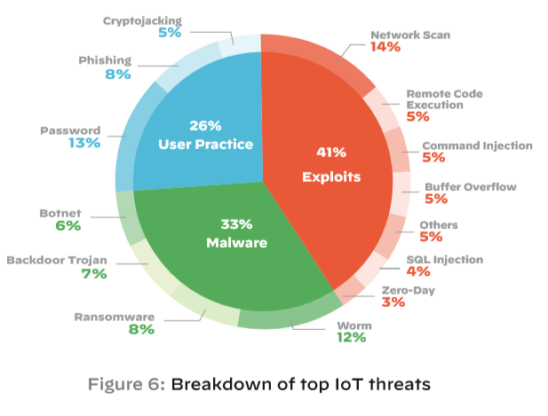
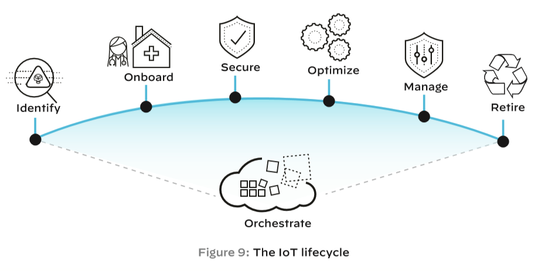

今天看到PALO ALTO和Unit 42联合发布了这个不到20页的报告，读了一下，虽然篇幅稍短，但是内容还是很有价值的，结合笔者去年在做的事情，浅薄的解读下，有兴趣的可以阅读原文
0x01 概要
报告主要分为现阶段的IoT安全格局、Top IoT Threats、结论建议三个部分。
第一部分主要讲现阶段IoT的安全格局，现在企业缺乏完善的IoT资产管理，缺少相应的安全产品去保护IoT设备，人力资源缺乏，整体风险很高，其中健康医疗行业风险特别高；
第二部分重点讲了现阶段IoT的网络攻击、密码攻击、蠕虫等Top 威胁，同时还提到了因为没打补丁的设备以及老协议，导致攻击的横向移动，越来越多的威胁演化为专门针对IoT的场景；
第三部分主要是讲如何解决这些威胁，4个步骤和2个最佳实践，下文会细讲。
0x02 IoT Security Landscape
IoT是快速发展的，同时存在着很大的安全问题（数据支撑这里就不详细列了，例如2019比2018增长了21.5%的IoT设备数量、98%的IoT传输没有加密等）。
1、企业缺少工具去识别资产和保护IoT设备
- IT 无法准确识别IoT资产
报告中认为像传统IT依靠IP和OS来进行资产管理的方式对于IoT场景是不完善的。只有准确的识别出IoT设备的类型，才可以准确的进行网络规划、安全策略部署等，可以连续的跟踪IoT设备的行为，而不是仅仅根据一个动态的IP。
笔者按：从笔者这一年的经历来看，这点说的非常贴切，IoT资产的管理和准入一直是个很大的痛点，通过IP来定位机器很容易丢掉，例如今天发现环境里某个IP的设备上有木马，然后去排查的时候，却发现因为DHCP随机分配IP的缘故，无法定位到问题设备了。当然这个例子有点极端，在泛IoT的场景下，mac地址也是一个非常核心的设备资产数据，但是也存在一些不足，因为泛IoT场景下设备的多样性，要准确的实现IoT设备资产管理需要多种方式的综合运用，例如流量、网络运维设备、人工排查等。
- 现有的安全产品大多不支持IoT设备
EDR等安全产品不支持IoT设备，PC上的安全产品会将IoT设备识别为未知类型，无法准确的识别风险和处置。基于网络的安全产品可以发现一部分风险，但是无法准确的识别、追踪IoT设备。
笔者按：这里指的IoT设备和现在国内大多数场景下的泛IoT设备含义有点不同，和监控摄像头这类产品比较类似。面对IoT环境下的设备多样性，基于流量的威胁检测成了大多数厂商的共同选择，例如本报告的发布者平底锅，当然还有笔者也在做这方面的尝试。对于发现威胁后的准确识别追踪，就需要先将IoT设备资产进行准确的识别和有效的管理。
- 在IT和OT之间，企业缺少足够的人力资源
IT主要关注IT资产,例如电脑、网络、打印机等，OT(operational technology)主要关注非IT设备，也就是上文笔者提到的泛IoT设备。因为IT和OT往往团队不在一个，而且因为电脑等IT资产发展迅速，可以获得更多的资源。而IoT设备为了稳定性(和原文有点差别，这里来自笔者实际经历的解读)，漏洞往往没有人去主动修复，存在着很大的风险。
2、企业现在面临着巨大的IoT安全风险
公司内的IoT设备(摄像头、打印机等)因为缺少IT维护，存在着巨大的风险。

3、医疗保健行业的状况是非常危急的
医疗设备运行着过时的操作系统
组织内缺少安全防御能力
医疗设备的操作系统是非常脆弱的
4、最基本的网络隔离最佳实践没有遵守
最简单的IoT风险补救措施就是网络细分，可以有效组织风险的横向移动。但是更多的情况下，网络划分时，没有严格细分，例如在医疗保健行业，将医疗设备和打印机等划分到一起。同时还提到了最理想的情况是进行微网络划分(在某些高危场景下确实应该这样)。
## 0x03 Top IoT Threats
针对IoT设备的威胁伴随着新的攻击技术在不断的演化，例如僵尸网络和蠕虫等
1、网络攻击、密码攻击、IoT蠕虫威胁位居榜首

利用目标设备的漏洞
IoT设备的特性特别容易成为被攻击的目标，它们往往成为攻击者入侵其它系统的跳板。
密码攻击
笔者按：默认密码和弱密码是真的痛，无论是在应用上还是在IoT设备上。
- IoT蠕虫变得比IoT僵尸网络更常见
笔者按：随着这几年勒索病毒的兴起，针对泛IoT设备的攻击主要都变成了这个，当然挖矿木马也非常常见。利用IoT僵尸网络的DDOS由于了解的不深，这里就不班门弄斧了。
2、没打补丁的设备、老旧的协议：横向移动的入口
补丁覆盖率低
笔者按：IoT设备往往会因为版本迭代，逐渐放弃对老版本的更新支持，同时因为设备运行环境及稳定性需求，往往会放弃给设备打安全补丁。
老旧的OT协议
这种情况更多的出现的工控环境下，随着网络边界的消失，这些老协议的风险正在暴露出来。
横向移动
57%的IoT设备容易受到中等或高强度的攻击，使得IoT设备成为攻击者的进攻入口。
3、许多威胁正在演化为专门针对IoT环境
P2P通信的特点
使得攻击可以最小化的与外界通信来控制内网环境下的IoT设备集群。
为host而战
病毒之间会互相干掉对方，争夺资源。
病毒的变种
例如Mirai系列
0x04 总结和建议
1、4个步骤来降低IoT风险(虽然不全面，但是很大程度下降低了IoT的风险)
1、IoT设备资产发现；
2、打补丁；
3、细划分VLANs；
4、实时监控。
笔者吐槽：这几个步骤无理反驳，还是去买他家的盒子吧。吐槽归吐槽，这几个步骤对于现在大多数的泛IoT环境是非常有效的，但是如何做到是个难题，也是笔者去年和未来要努力去达到的。
最佳实践1：整体思考IoT的生命周期

- 1、识别：设备准入
- 2、边界：NAC和Firewall结合（据笔者了解有些团队已经在做了）
- 3、安全：基于流量的威胁发现（笔者正在做的事情）
- 4、最优化：提高IoT设备的使用率
- 5、管理：实时监控、报警
- 6、回收：IoT设备的回收审计流程
最佳实践2：通过产品集成将安全性扩展到所有的IoT设备
安全产品集成包括以下：
- Asset management and computerized maintenance management systems (CMMS)
- Security information and event management (SIEM)
- Security orchestration, automation, and response (SOAR)
- Next-generation firewalls (NGFW)
- Network access control (NAC)
- Wireless/Network management solutions
笔者总结
~~ 这个报告虽然篇幅较短，但是不得不说平底锅的盒子贵有贵的道理，这篇报告的绝大部分都击中了现在IoT环境，特别是泛IoT环境所面临的安全威胁，整体解决思路和笔者正在做的大致相同。不过报告并没有说到具体如何落地，和绝大多数安全厂商一样，有点空中楼阁的感觉。但是经过笔者去年的验证，这两个落地实践的可行性是没有问题的，但是如何落地，长路漫漫，一点一点来了。~~
本文由 B1ueB0ne
创作，采用 知识共享署名4.0 国际许可协议进行许可
本站文章除注明转载/出处外，均为本站原创或翻译，转载前请务必署名
最后编辑时间为: 2020-08-24T10:46:25+08:00